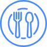

<ion-header no-shadow no-border>
  <ion-navbar no-lines>
    <ion-buttons left>
      <button ion-button icon-only menuToggle class="menu-color">
        <ion-icon name="menu"></ion-icon>
      </button>
    </ion-buttons>
  </ion-navbar>

</ion-header>

<ion-content padding>
  <!-- Menu para la cocina-->
  <ion-item no-lines *ngIf="type_user === 0">
    <ion-grid>
      <ion-row>
        <ion-col>
          <div text-center>
            <button ion-button clear></button>
            <h3>Platillos</h3>
          </div>
        </ion-col>
        <ion-col>
          <div text-center>
            <button ion-button clear></button>
            <h3>Ingredientes</h3>
          </div>
        </ion-col>
      </ion-row>
    </ion-grid>
  </ion-item>
  <!-- Fin de menu para la cocina-->
</ion-content>

<ion-footer no-shadow no-border>
  
</ion-footer>